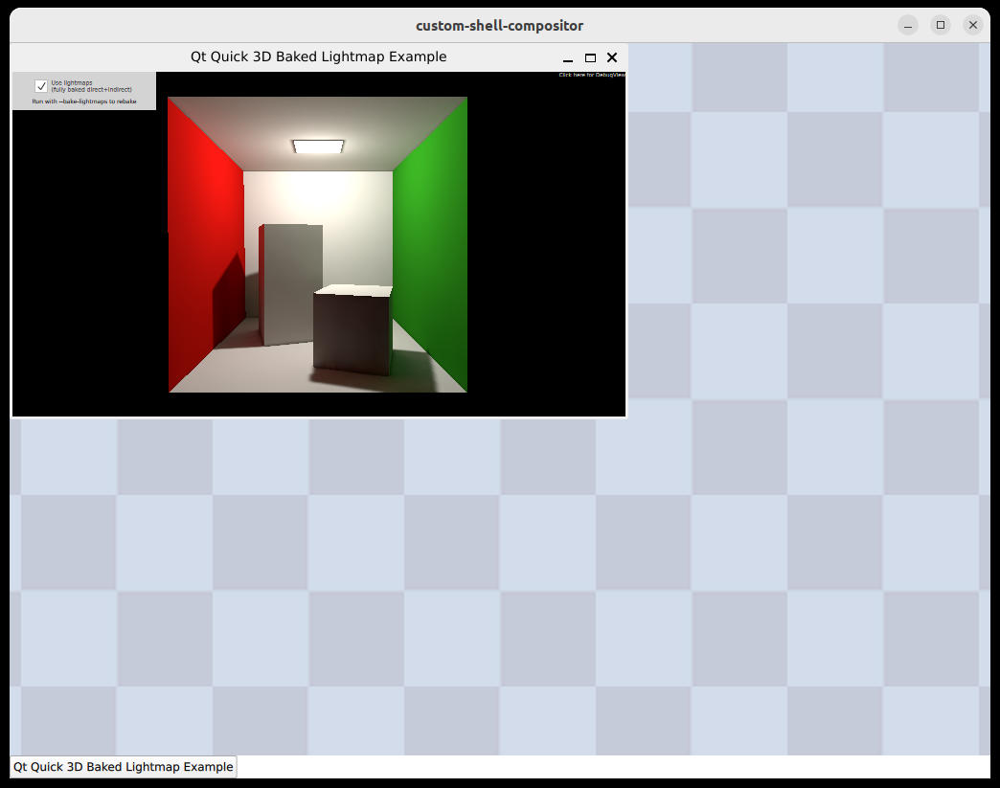

Custom Shell
Custom Shell shows how to implement a custom shell extension.
Shell extensions to Wayland are protocols that manage window state, position and size. Most compositors will support one or more of built-in extensions, but in some circumstances it can be useful to be able to write a custom one which contains the exact features your applications need.

This requires that you implement the shell extension on both the server-side and client-side of the Wayland connection, so it is mainly useful when you are building a platform and are in control of both the compositor and its client applications.
The Custom Shell example shows the implementation of a simple shell extension. It is divided into three parts:
- A protocol description for a custom shell interface.
- A plugin for connecting to the interface in a client application.
- An example compositor with a server-side implementation of the interface.
The protocol description follows the standard XML format read by wayland-scanner. It will not be covered in detail here, but it covers the following features:
- An interface for creating a shell surfaces for a
wl_surface. This allows the protocol to add functionality on top of the existingwl_surfaceAPIs. - A request to set a window title on the shell surface.
- A request to minimize/de-minimize the shell surface.
- An event informing the client of the shell surface's current minimized state.
In order to have qtwaylandscanner run automatically as part of the build, we use the CMake functions qt_generate_wayland_protocol_server_sources() and qt_generate_wayland_protocol_client_sources() for generating the server-side and client-side glue code, respectively. (When using qmake, the WAYLANDSERVERSOURCES and WAYLANDCLIENTSOURCES variables achieve the same.)
The Client Plugin
In order for the shell integration to be discovered by a Qt client, we must reimplement the QWaylandShellIntegrationPlugin.
class QWaylandExampleShellIntegrationPlugin : public QWaylandShellIntegrationPlugin { Q_OBJECT Q_PLUGIN_METADATA(IID QWaylandShellIntegrationFactoryInterface_iid FILE "example-shell.json") public: QWaylandShellIntegration *create(const QString &key, const QStringList ¶mList) override; }; QWaylandShellIntegration *QWaylandExampleShellIntegrationPlugin::create(const QString &key, const QStringList ¶mList) { Q_UNUSED(key); Q_UNUSED(paramList); return new ExampleShellIntegration(); }
This attaches the "example-shell" key to the shell integration and provides a way for the ExampleShellIntegration class to be instantiated when a client connects to the interface.
The APIs for creating shell extensions are available in the header qwaylandclientshellapi_p.h.
#include <QtWaylandClient/private/qwaylandclientshellapi_p.h>
This header requires including private API because unlike public Qt APIs, it does not come with binary compatibility guarantees. The APIs are still considered stable and will remain source compatible, and are similar in this respect to other plugin APIs in Qt.
The ExampleShellIntegration is the client-side entry point for creating shell surfaces as described above. It extends the QWaylandShellIntegrationTemplate class, using the Curiously Recurring Template Pattern.
class Q_WAYLANDCLIENT_EXPORT ExampleShellIntegration : public QWaylandShellIntegrationTemplate<ExampleShellIntegration> , public QtWayland::qt_example_shell { public: ExampleShellIntegration(); QWaylandShellSurface *createShellSurface(QWaylandWindow *window) override; };
It also inherits from the QtWayland::qt_example_shell class, which is generated by qtwaylandscanner based on the XML description of the protocol.
The constructor specifies the version of the protocol that we support:
ExampleShellIntegration::ExampleShellIntegration() : QWaylandShellIntegrationTemplate(/* Supported protocol version */ 1) { }
The example_shell protocol is currently at version one, so we pass a 1 to the parent class. This is used in protocol negotiation, and makes sure that older clients will continue working if the compositor uses a newer version of the protocol.
When the ExampleShellIntegration is initialized, the application is connected to the server, and has received the broadcast of global interfaces the compositor supports. If successful, it can issue requests for the interface. In this case, there is only one request to support: Creating a shell surface. It uses the built-in function wlSurfaceForWindow() to convert the QWaylandWindow to a wl_surface, then it issues the request. It then extends the returned surface with a ExampleShellSurface object which will handle the requests and events on the qt_example_shell_surface interface.
QWaylandShellSurface *ExampleShellIntegration::createShellSurface(QWaylandWindow *window) { if (!isActive()) return nullptr; auto *surface = surface_create(wlSurfaceForWindow(window)); return new ExampleShellSurface(surface, window); }
The ExampleShellSurface extends two classes.
class ExampleShellSurface : public QWaylandShellSurface , public QtWayland::qt_example_shell_surface
The first is the QtWayland::qt_example_shell_surface class which is generated based on the XML description of the protocol. This provides virtual functions for events and ordinary member functions for the requests in the protocol.
The QtWayland::qt_example_shell_surface class only has a single event.
void example_shell_surface_minimize(uint32_t minimized) override;
The ExampleShellSurface reimplements this to update its internal window state. When the window state is change, it stores the pending state until later and calls applyConfigureWhenPossible() in QWaylandShellSurface. State, size and position changes should be organized like this. That way, we ensure that changes do not interfere with rendering to the surface, and multiple related changes can easily be applied as one.
When it is safe to reconfigure the surface, the virtual applyConfigure() function is called.
void ExampleShellSurface::applyConfigure() { if (m_stateChanged) QWindowSystemInterface::handleWindowStateChanged(platformWindow()->window(), m_pendingStates); m_stateChanged = false; }
This is where we actually commit the new (minimized or de-minimized) state to the window.
The second super class is QWaylandShellSurface. This is the interface used by Wayland's QPA plugin and QWaylandWindow to communicate with the shell. The ExampleShellSurface reimplements a few virtual functions from this interface as well.
bool wantsDecorations() const override;
void setTitle(const QString &) override;
void requestWindowStates(Qt::WindowStates states) override;
void applyConfigure() override;
For example, when the Qt applications sets the title of a window, this translates into a call to the virtual setTitle() function.
void ExampleShellSurface::setTitle(const QString &windowTitle) { set_window_title(windowTitle); }
In the ExampleShellSurface this in turn translates to a request on our custom shell surface interface.
The Compositor
The final part of the example is the compositor itself. This has the same general structure as the other compositor examples. See the Minimal QML example for more details on the building blocks of a Qt Wayland Compositor.
One notable difference in the Custom Shell compositor is the instantiation of the shell extension. Where the the Minimal QML example instantiates the shell extensions IviApplication, XdgShell and WlShell, the Custom Shell example only creates an instance of the ExampleShell extension.
ExampleShell { id: shell onShellSurfaceCreated: (shellSurface) => { shellSurfaces.append({shellSurface: shellSurface}); } }
We create the instance of the shell extension as a direct child of the WaylandCompositor in order to have it registered as a global interface. This will be broadcasted to clients as they connect, and they will be able to attach to the interface as outlined in the previous section.
The ExampleShell is a subclass of the generated QtWaylandServer::qt_example_shell interface, which contains the API defined in the protocol XML. It is also a subclass of QWaylandCompositorExtensionTemplate, which ensures the objects are recognized by QWaylandCompositor as extensions.
class ExampleShell : public QWaylandCompositorExtensionTemplate<ExampleShell> , QtWaylandServer::qt_example_shell
This dual inheritance is a typical pattern in Qt Wayland Compositor when building extensions. The QWaylandCompositorExtensionTemplate class creates the connection between QWaylandCompositorExtension and the qt_example_shell class generated by qtwaylandscanner.
Equivalently, the ExampleShellSurface class extends the generated QtWaylandServer::qt_example_shell_surface class as well as QWaylandShellSurfaceTemplate, which makes it a subclass of the ShellSurface class and establishes the connection between Qt Wayland Compositor and the generated protocol code.
To make the type available to Qt Quick, we use the Q_COMPOSITOR_DECLARE_QUICK_EXTENSION_CLASS preprocessor macro for the convenience. Among other things, this handles automatically initializing the extension when it has been added to the Qt Quick graph.
void ExampleShell::initialize() { QWaylandCompositorExtensionTemplate::initialize(); QWaylandCompositor *compositor = static_cast<QWaylandCompositor *>(extensionContainer()); if (!compositor) { qWarning() << "Failed to find QWaylandCompositor when initializing ExampleShell"; return; } init(compositor->display(), 1); }
The default implementation of the initialize() function register the extension with the compositor. In addition to this, we initialize the protocol extension itself. We do this by calling the generated init() function in the QtWaylandServer::qt_example_shell_surface class.
We also reimplement the virtual function generated for the surface_create request.
void ExampleShell::example_shell_surface_create(Resource *resource, wl_resource *surfaceResource, uint32_t id) { QWaylandSurface *surface = QWaylandSurface::fromResource(surfaceResource); if (!surface->setRole(ExampleShellSurface::role(), resource->handle, QT_EXAMPLE_SHELL_ERROR_ROLE)) return; QWaylandResource shellSurfaceResource(wl_resource_create(resource->client(), &::qt_example_shell_surface_interface, wl_resource_get_version(resource->handle), id)); auto *shellSurface = new ExampleShellSurface(this, surface, shellSurfaceResource); emit shellSurfaceCreated(shellSurface); }
This virtual function is called whenever a client issues the request on the connection.
Our shell extension only supports a single QWaylandSurfaceRole, but it is still important that we assign it to the QWaylandSurface when we create a shell surface for it. The primary reason for this is that assigning conflicting roles to the same surface is considered a protocol error, and it is the compositor's responsibility to issue this error if it happens. Setting a role on the surface when we adopt it, ensures that the protocol error will be issued if the surface is reused with a different role later.
We use built-in functions to convert between Wayland and Qt types, and create an ExampleShellSurface object. When everything is prepared, we emit the shellSurfaceCreated() signal, which in turn is intercepted in the QML code and added to the list of shell surfaces.
ExampleShell { id: shell onShellSurfaceCreated: (shellSurface) => { shellSurfaces.append({shellSurface: shellSurface}); } }
In ExampleShellSurface, we equivalently enable the shell surface part of the protocol extension.
Running the example
In order to have a client successfully connect to the new shell extension, there is a couple of configuration details to be handled.
First of all, the client has to be able to find the shell extension's plugin. One simple way of doing this is to set the QT_PLUGIN_PATH to point to the plugin install directory. Since Qt will look up plugins by category, the plugin path should point to the parent directory that contains the directory for category wayland-shell-integration. So if the installed file is /path/to/build/plugins/wayland-shell-integration/libexampleshellplugin.so, then you should set QT_PLUGIN_PATH as follows:
export QT_PLUGIN_PATH=/path/to/build/plugins
For other ways to configure the plugin directory, see the plugin documentation.
The final step is to make sure the client actually attaches to the correct shell extension. Qt clients will automatically try to attach to the built-in shell extensions, but this can be overridden by setting the QT_WAYLAND_SHELL_INTEGRATION environment variable to the name of the extension to load.
export QT_WAYLAND_SHELL_INTEGRATION=example-shell
And that is all there is to it. The Custom Shell example is a limited shell extension with only a very few features, but it can be used as a starting point for building specialized extensions.